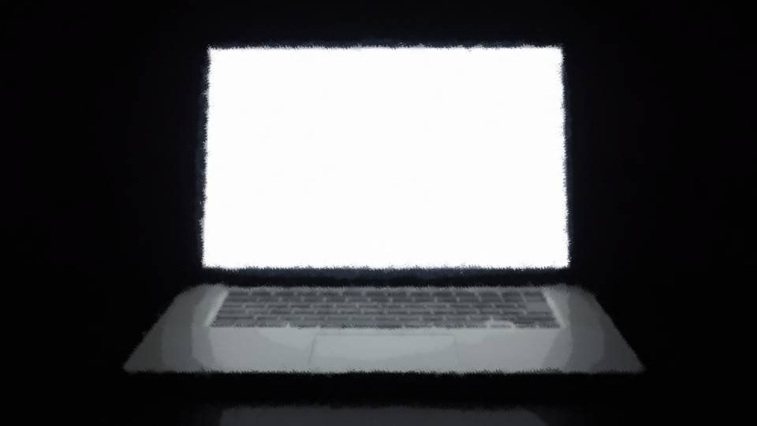
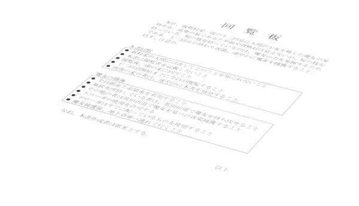

Hidden route of scene 239 (Branch)
Something bad has happened. This will wreck the plan.
There was some kind of commotion on the first floor, so I had been listening in.
There was some kind of commotion on the first floor, so I had been listening in.

Apparently Shirozaki-san had come to deliver a branch with cherry blossoms on it.
So that Natsumi-chan would carry it at tomorrow's thirteenth-year memorial service.
Honestly, what a thing to do...! Why does everyone have so little imagination?
Don't they understand what the residents will think if they do that?
It will have completely the opposite effect...!
So that Natsumi-chan would carry it at tomorrow's thirteenth-year memorial service.
Honestly, what a thing to do...! Why does everyone have so little imagination?
Don't they understand what the residents will think if they do that?
It will have completely the opposite effect...!
The witch's power―
It is the danger sense that appears only in this season.
It is triggered when a human who has become a second generation of Droga is in a place with cherry pollen and, on top of that, is doused in first-generation blood again.
It is the danger sense that appears only in this season.
It is triggered when a human who has become a second generation of Droga is in a place with cherry pollen and, on top of that, is doused in first-generation blood again.
Why it came to be called the witch's power, I do not know.
At some point, one of the residents started calling it that.
At some point, one of the residents started calling it that.

Most likely, rumors spread of something like the dead Sakura's curse, and people began calling the ability that Sakura had a kind of cursed power.
Never mind that they leaned on that power plenty when Sakura was alive.
Never mind that they leaned on that power plenty when Sakura was alive.
Well, none of that matters right now.
Either way, I have to hurry.
Either way, I have to hurry.

If Natsumi-chan goes to the service carrying the cherry branch, someone wary of the witch's power might attack her.
Of course, I still have not told anyone about Natsumi-chan's ability.
Of course, I still have not told anyone about Natsumi-chan's ability.
But with suspicion feeding on itself this far, I have to allow for even a worst case like this.
I cannot let Natsumi-chan die.
She is a precious living second generation.
I cannot let Natsumi-chan die.
She is a precious living second generation.
Then I had better use this situation and move first.
I will deliberately use the residents as a feint and create a situation where I can capture Natsumi-chan without fail.
Either way, before Natsumi-chan goes back to Motoki-cho, I have to catch her alive.
Otherwise, Sakura and I, never again...
I will deliberately use the residents as a feint and create a situation where I can capture Natsumi-chan without fail.
Either way, before Natsumi-chan goes back to Motoki-cho, I have to catch her alive.
Otherwise, Sakura and I, never again...
About the only thing I can do is use the residents as a feint and take Natsumi-chan alive.
How to capture Natsumi-chan had been the biggest problem from the start.
At first I had meant to abduct Natsumi-chan sometime after the thirteenth-year memorial service was over.
How to capture Natsumi-chan had been the biggest problem from the start.
At first I had meant to abduct Natsumi-chan sometime after the thirteenth-year memorial service was over.


But she had built a better relationship with Chigaya and Kana than I had thought she would.
With those two guarding her, I cannot lay a hand on her so easily.
Even if I tried to set some of the residents on her, one wrong move and I would be suspected as the curse-killing culprit.
In that case, it is more convenient in every way to turn all the residents against Natsumi-chan and have them all catch her together.
Done the right way, I should be able to steer their minds into believing Natsumi-chan is the curse-killing culprit.
With those two guarding her, I cannot lay a hand on her so easily.
Even if I tried to set some of the residents on her, one wrong move and I would be suspected as the curse-killing culprit.
In that case, it is more convenient in every way to turn all the residents against Natsumi-chan and have them all catch her together.
Done the right way, I should be able to steer their minds into believing Natsumi-chan is the curse-killing culprit.

Once everyone was asleep, I made the circular notice.
The gist: 'Whoever carries a cherry branch is the witch. Everyone is to take her alive.'
I will send it around before the thirteenth-year memorial service, and after the service, Natsumi-chan will be taken alive.
First I will leave it at Shirozaki-san's house next door and have it passed along in turn.
The gist: 'Whoever carries a cherry branch is the witch. Everyone is to take her alive.'
I will send it around before the thirteenth-year memorial service, and after the service, Natsumi-chan will be taken alive.
First I will leave it at Shirozaki-san's house next door and have it passed along in turn.
This is how things stand now. Even information they would normally doubt, everyone will believe without a second thought.
No, it is less that they will believe it without a second thought than that their own standing will be at risk if they do not go through with it.
They must know what will be done to them if they do not join this attack.
No, it is less that they will believe it without a second thought than that their own standing will be at risk if they do not go through with it.
They must know what will be done to them if they do not join this attack.

Good. This should take care of it.
Once Natsumi-chan is taken alive, I take her underground, let her meet Sakura, and have Sakura talk her into becoming a divine messenger.
Taking someone from Motoki-cho hostage, or the like, should make it easy.
Then all it takes is using some resident or other as a living first generation, and everything is finished.
Once Natsumi-chan is taken alive, I take her underground, let her meet Sakura, and have Sakura talk her into becoming a divine messenger.
Taking someone from Motoki-cho hostage, or the like, should make it easy.
Then all it takes is using some resident or other as a living first generation, and everything is finished.
With this, Sakura and I, forever...